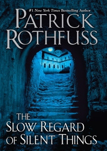

The Slow Regard of Silent Things
- Read on 2014-12-01
- Rating: ️️️️️
- Format: 📖 (159 pages)
You may have read The Name of the Wind, or The Wise Man's Fear. If you're as impatient as so many others, and hoping to get more story about Kvothe through this book, you're going to be highly disappointed. You'll get not one appearance, or word spoken by the Kingkiller. This story is about Auri, the tender-hearted, ever-seeing inhabitant of the Underthing. This story is unlike the previously mentioned books in many ways, except it still has great writing. You may be an insensitive and unrelating person. You may not have read the two previously mentioned books, and be lacking some of the context of the main character. The truth is, I think you'll like it (regardless of those things), and be just as bad as I have been at explaining why you did.